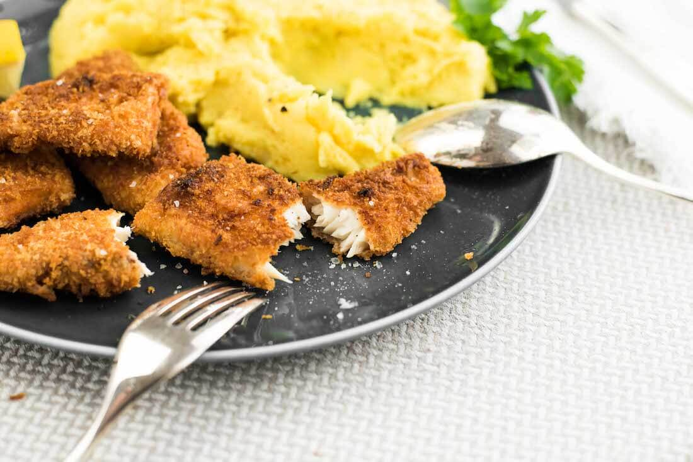

Fischstäbchen mit Kartoffeln
Super einfacher 'Kartoffelbrei mit Fischstäbchen
Für 3 Personen in 30min fertig

6-7
Stück
Kartoffeln
15
Stück
Fischstäbchen (1 Packung)
2-3
Esslöffel
Butter
Kartoffeln schälen
Wasser mit Kartoffeln zum Kochen bringen, leicht köcheln
Ofen Vorheizen und Fischstäbchen reinschieben
Kartoffeln abgiessen
Kartoffeln auf Teller mit Butter zerdrücken und mit den Fischstäbchen servieren